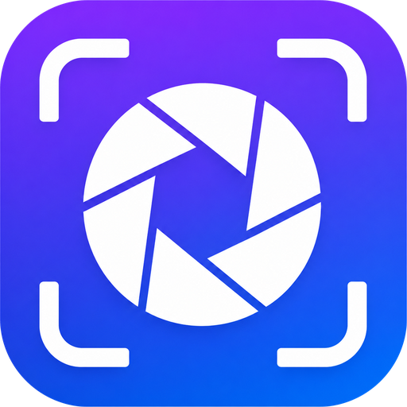

Capture is just the beginning.
Capture your screen, edit on the spot, and find it again in your library.
Everything you need, built in
From capture to annotation to recording — all in one app.
Quick capture
Capture a region, the full screen, or a specific window with a single shortcut. Multi-monitor supported.
Ctrl + Alt + CPowerful annotation
Rectangles, arrows, text, numbers, highlighter, and blur. Edit right after you capture.
GIF & video recording
Record a region or the full screen to MP4 or GIF. MP4 video can also capture system audio.
Ctrl + Alt + REdit right on screen
Annotate right where you captured — no separate window pops up.
Hide sensitive info
Mask with mosaic or blur, then share with confidence.
GIF quality settings
Choose a GIF quality to keep it light or make it sharper, depending on your need.
Save or copy
After capturing, save to a file or copy to the clipboard and paste right away.
Capture library · text search
Captures you copy or save are stored automatically. Find them by type, date, or app, and search the text inside images.
Recent captures
Your latest captures appear right on the home screen — click to preview, copy, or edit.
Custom shortcuts
Set capture and editing shortcuts to fit your hands.
Light & fast
A native app built on Rust + Tauri. Minimal system footprint, instant launch.
Korean & English
Automatically follows your OS language, or pick Korean / English manually in Settings.
The easiest way to find past captures
Captures you copy or save are collected automatically — find them fast by title, filter, or search.
Auto-saved
Captures you copy or save are collected automatically.
Organize by title
Rename captures so they're easy to find later.
Filter by type, date, app
Narrow down by image, video, or GIF and date or source app.
Search text in images
Search the text inside captures to find the screen you need again.
Made for moments like these
One capture, many uses.
Bug reports
Point things out with arrows, numbers, text, and more — crystal clear for developers.
Feedback
Mark up designs and docs, then share your notes.
Video demo
Capture motion as a GIF or video and show exactly how it works.
Keep & search
Stash receipts and info screens, then search them back when you need them.
Your captures stay on your PC
Captures, recordings, and your library are all stored locally — nothing goes to the cloud.
Stored on your PC
Every capture is saved on your PC. Nothing is sent to external servers.
No account, no sign-in
No sign-up, no login. Install and start right away.
No ads, no tracking
No ads, no user tracking.
Microsoft Store install
Install through the Microsoft Store and get updates safely.
Get started with ClipShot
Install directly on Windows 10/11.
Windows 10 (1809) or later · 64-bit
ClipShot is currently Windows 10/11 only. macOS support is under consideration.